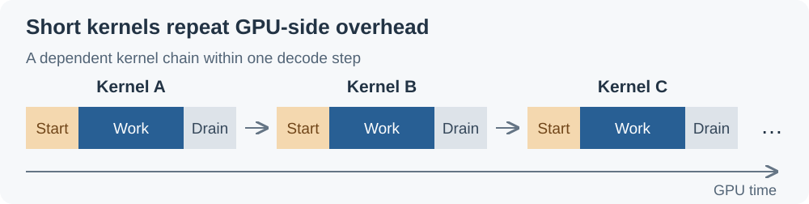
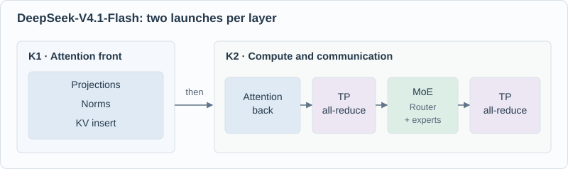

引言
交互式大语言模型（LLM）应用依赖低解码延迟。编码智能体必须先完成当前动作的生成，才能调用下一个工具，因此解码位于任务的关键路径上。以低并发方式服务此类工作负载时，重点是每位用户的响应速度，而不是总吞吐量。
一次解码步会执行一串 GPU 内核，以完成投影、注意力和专家计算等操作。在小批量下，许多内核只执行少量工作，但每个内核仍会产生 GPU 端的派发、启动和收尾成本。依赖内核只有在输入就绪后才能继续，因此完整内核之间的边界也会限制重叠执行。这些成本在长链条中反复出现，可能占据解码延迟的相当一部分；与此同时，少量并行工作又使 GPU 容量得不到充分利用。HIP Graph 可降低 CPU 启动开销，但不能消除这些 GPU 端成本。图 1 展示了重复出现的阶段；图中宽度与间隔仅为示意，并非测量所得的持续时间或开销分解。


本文介绍用 FlyDSL 编写的 **MonoKernel（单体内核）**如何降低 vLLM 在 AMD Instinct GPU 上进行交互式 LLM 服务时的解码延迟。我们先解释这种方法及其与 vLLM 的集成方式，再分析性能和准确性。
MonoKernel 如何降低解码延迟
MonoKernel 使用明确设计的调度，把多个相互依赖的算子阶段合并到一次 GPU 内核启动中，而不是在每个算子边界单独启动内核。这里的 mono 指单一的内核执行边界，并不表示把整个模型塞进一个内核。一个模型的 mono 解码路径可以包含多个 MonoKernel，单个解码器层也不一定恰好对应一次启动。
目标不只是让单个算子更快，还要缩短算子之间的等待时间。受 TileRT 启发，本文讨论的实现采用持久化启动（persistent launch）：由固定网格的 GPU 线程块连续完成多个阶段。线程块是一组共同执行的 GPU 线程；只要所需依赖已满足，它就可以继续处理后续工作。
图 2 中两条路径都可在 HIP Graph 下重放。二者的区别在于，是运行多个独立内核，还是在一次启动内执行由作者设计的持久化调度。一些完整内核之间的边界会转化为计算片段之间粒度更细的交接。

- 跨阶段复用线程块。 线程块完成当前工作后，可以直接接手下一阶段已经就绪的工作，无需另一次内核启动，从而减少重复的 GPU 内核启动和排空。
- 在较早工作计算期间读取后续权重。 例如，可在前序计算期间预取输出投影或专家上投影/门控权重。当调度与资源条件允许时，这会让部分 HBM 流量与有效计算重叠，避免所有内存延迟都暴露在关键路径上。但它不会消除权重读取，也不能保证隐藏全部内存延迟。
- 按照消费者实际需要的粒度交接数据。 *tile（分块）*是张量的一部分。**带标签邮箱（tagged mailbox）**保存中间结果，并用标签表示其是否就绪。下游阶段或对等 GPU 上的归约只要等到所需数据就绪即可继续，无需等待生产阶段中无关的工作。消费者仍须等待自身计算所需的全部输入。
选择针对具体模型的内核边界
一个关键设计难题是决定 MonoKernel 从哪里开始、在哪里结束：哪些操作共用一次启动，哪些继续保留为独立内核。融合更多阶段并不一定更好。边界必须适应模型的数据依赖、通信模式和 GPU 资源限制。因此，MonoKernel 边界需要针对模型设计，而不是采用通用的“一层一个内核”模板。
例如，最初的 DeepSeek-V4.1-Flash 实现（#60397）把标准解码器层路径划分为 K1 和 K2。图 3 展示各边界内包含的操作，并不表示执行时序。


K1 准备注意力输入并更新 KV 缓存。K2 完成注意力，并继续执行前馈网络工作；两次 TP 全归约都在内核内部使用对称对等内存。这些归约按照 rank 顺序以 fp32 求和，再转换为 bf16，并与周围工作重叠。它们位于 K2 内，并不意味着通信或跨 rank 同步已经消失。
此示例的算子级映射
| 启动 | 阶段 |
|---|---|
| K1 | 注意力之前的 mHC（超连接）混合 → 注意力前半部分：wqkv、q/kv 归一化、写入 KV 缓存、wq_b |
| K2 | 注意力后半部分（拆分注意力、合并、wo_a、wo_b）→ TP 全归约 → FFN 之前的 mHC 混合 → MoE（路由器、top-6、共享专家、MXFP4 专家）→ TP 全归约 |
更窄的边界：MiniMax-M3。 最初实现（#62712）融合 FFN 部分及其前后通信，而注意力仍走标准路径。与 DeepSeek 示例相比，它只选择层的一部分执行 mono 路径。这些示例体现了不同的边界选择，并不是可以原样迁移到所有模型的固定配方。
FlyDSL 为何适合这种执行模型
边界和调度由内核作者设计，并不会因为选择某种语言而自动生成。FlyDSL 是 AMD 面向高性能 ROCm 内核的 Python DSL 和 MLIR 编译器，提供表达并编译这种设计所需的控制能力。作者负责设计，FlyDSL 负责编译，vLLM 负责选择并集成执行路径。 图 4 展示图 2 中两个线程块之间的交接，以及每一步背后的 FlyDSL 原语。

块 i 写入结果，等待写入落地（s_waitcnt 和屏障），然后通过邮箱写入操作为每个 token 置起一个标志。块 j 已提前发出阶段 B 的权重加载，因此权重会在它轮询所需标志期间到达；标志一旦置起，它就立即开始阶段 B，中间没有内核边界。FlyDSL 会按书写顺序编译，不会自行融合或重新排序阶段。vLLM 中的 DeepSeek-V4.1-Flash 注意力前半部分采用了这一模式。模型、GPU 架构以及受支持的步宽仍决定哪些变体可以运行。下一节说明 vLLM 如何集成这些内核，同时保留服务引擎的其余部分。
实现细节：布局、编译和受支持配置
控制数据移动与同步。为了重叠不同阶段，实现必须决定如何在块、wave 和线程之间划分工作，何时发出加载，以及结果何时可用。FlyDSL 允许作者表达这些选择，必要时可具体到缓冲区和矩阵指令。收益来自最终形成的调度，而不是 Python 语法本身。
让布局和低精度计算适应每个阶段。投影、注意力和专家计算并不使用相同的数据布局。FlyDSL 允许作者选择每个阶段如何划分和访问张量，并把低精度计算映射到 GPU 的矩阵指令。在 MI355X 上，mono 实现可原地读取 vLLM 已加载的权重，包括 AITER 重排后的 MXFP4 专家布局，无需保留第二份副本。这些控制能力也有助于移植，但不会让移植自动完成：CDNA3 的共享内存（LDS）较小，矩阵指令路径也不同于 CDNA4，因此需要适合其条件的分块尺寸。
针对受支持配置进行特化和编译。使用 @flyc.kernel 和 @flyc.jit 编写的内核会在首次使用时编译并缓存。实现会针对模型、TP 大小和受支持的步宽进行特化；步宽是一次前向步骤中处理的 token 行数，包括推测位置和图填充。vLLM 在预热期间构建所需的宽度变体，并在 HIP Graph 下重放。这是一种有针对性的特化，并不保证一个调度可服务任意模型或批量大小。
内核源码保留在模型对应的 vLLM 目录中，并把 flydsl wheel 作为新的运行时依赖。确定性编译也支持在评审期间比较 ISA 和资源使用情况。
vLLM 中的专用解码
对 vLLM 而言，MonoKernel 路径是一种专用解码（specialized decode）：它是位于 vLLM 常规接口之后、针对模型和硬件定制的解码前向路径。调度器、KV 缓存管理器、采样、推测解码和 HIP Graph 保持不变；只有解码器层采用不同执行方式，而且只在内核能够处理的步骤上启用。所有已经合入的 mono PR 都遵循 RFC #60904 中商定的规则：
- 选择性启用，不支持时拒绝启动。 默认关闭该路径；
--monokernel用于启用它（等价于--additional-config '{"decode_backend": "latency_specialized"}'，Kimi-K3 会读取该配置）。如果部署配置无法由这些内核处理，系统会在启动时失败并列出全部原因。 - 代码归模型所有。 内核、运行时和测试位于
vllm/models/<model>/amd/下。Kimi-K3 只在现有模型文件中增加了 26 行代码，没有修改 vLLM 核心。 - 按层、按步骤选择 mono 或标准路径。 每一步调用一次
plan()作出决定。预填充、混合批次以及宽度超过内核能力的步骤走标准层。Mono 层使用 vLLM 的权重和 KV 缓存，并返回相同张量，因此两类路径可以在同一步骤中混合。 - 兼容 HIP Graph 和推测解码。 捕获尺寸无需变化，推测验证步骤也可以使用 mono 路径。
结果
图 5 汇总的已合入 PR 评测由各自作者在 MI355X 或 MI325X 上完成。单独的 GLM-5.2 小节报告 MI350X 上的 RFC 测量结果，这些结果没有纳入图 5。AgentX 是 InferenceX 基于多轮、长上下文智能体会话构建的基准测试。每个 AgentX 数据点均运行 3,600 秒。**交互性（interactivity）**定义为 1 / token 间延迟（除非另有说明，均取 P90），单位为 token/s/user，越高越好。图 5a 展示每个具有同机标准路径基线的已合入 PR 在并发 1 时的加速比；DeepSeek-V4-Pro 因采用历史 InferenceX 运行作为对照而未列入。图 5b 展示三个同时扫描并发度、并具有同机标准路径基线的 PR；它们在图 5a 中的柱和图 5b 中的线采用相同颜色。每个值都是相应 PR 所报告指标的比值，并统一为越高越好：交互性取 mono / 标准路径，TPOT 和解码步时间取标准路径 / mono。下面各模型小节给出绝对数值和 PR 链接。

DeepSeek-V4.1-Flash
#60397 把 30 个标准层作为 K1 + K2 运行；在同一台 TP2 MI355X 节点上，启用 mono 后，并发 1 的 P90 交互性从 318.1 提高到 429.1 tok/s/user。在整个扫描范围内，总吞吐量提高 1.04–1.16×；由于预填充不使用 mono 路径，P90 TTFT 的变化不超过 0.1 秒。同一 PR 针对另外 10 层的 FFN 启动又带来 1.02–1.19× 提升；在 TP4 下，并发 1 / 2 / 4 / 8 的 P90 交互性分别达到 InferenceX 已发布同配方运行的 1.66× / 1.56× / 1.64× / 1.38×。#61082 随后让全部 40 层都以 K1 + K2 运行，在 TP4、并发 1 下达到 562.6 tok/s/user，比早期 mono 路径再提高 3.9%。
MI300X/MI325X 移植版本（#60731）把一个标准解码器层从 320 µs 内的 32 个内核缩减为 115 µs 内的 2 个内核。在 MI325X 上以 TP4 运行 AgentX 时，并发 1 的 P90 交互性从 182.25 提高到 411.26 tok/s/user，每 GPU 总吞吐量提升 1.63×；在并发 2 / 4 / 8 下，P90 交互性分别达到 InferenceX 已发布 MI325X 数据点的 2.41× / 2.22× / 1.99×。
在 MI355X 的 TP8 配置（#64101）中，每个 rank 流式读取的权重只有 TP4 的一半，而 K1/K2 链长度不变，因此 mono 解码在并发 1 时仍然有效。在一台 TP8 服务器上，仅切换 --monokernel，采用 DSpark 推测解码的一个解码步会从 8.59 ms 降至 5.36 ms（392 → 580 tok/s）。这些步时间测量使用合成的 3.87 接受长度，以便把步时间与接受率分离；该 TP8 配置的准确性仍在评估中，详见 PR。DSpark 草稿模型也运行在同一组内核上（#62131）：其三个层每步约需 227 µs，而标准路径约为 640 µs，接受长度不变。
DeepSeek-V4-Pro
更大的 Pro 模型拥有一份针对自身尺寸特化的 mono 包（#61482，MI355X 上 TP8）。在并发 1 / 4 / 8 下，AgentX P50 交互性分别为 +28.7% / +26.5% / +11.9%。但基线是旧软件栈上的历史 InferenceX 运行，因此这些数字同时包含软件栈变化和内核带来的影响。
MiniMax-M3
MiniMax-M3 MXFP4 PR（#62712）表明，局部融合已经能够带来收益：只有第 3–59 层的 FFN 后半部分（全归约、RMSNorm、路由器、共享与路由专家、最终全归约）作为一次启动执行，注意力仍走标准路径。在 MI355X 上以 TP4、随机 1k/1k 提示运行时，并发 1 的 TPOT 从 5.12 ms 降至 4.27 ms。同时融合注意力和稀疏索引器的 M3 与 M3.1 全层 mono 解码仍在评审中（#59705、#65638）。
Kimi-K3
Kimi-K3 混合使用 KDA 线性注意力层和 MLA 层。#60683 把 KDA 层作为 K1 + K2 运行，并把 MLA 层的输出投影和 MoE 作为 K2；#61435 增加 MLA 序言和尾声内核，并在不使用解码上下文并行（DCP1）时，把 FlyDSL MLA 解码注意力阶段融合进 K2，使一个 MLA 层只需两次启动。在 MI355X 上使用 TP8、并发 1 和 7 个推测 token 时，8k 输入的 P50 TPOT 从 5.47 ms（标准路径）降至 4.35 ms（#60683），再降至 3.44 ms（DCP1 下叠加 #61435，1.59×）；64k 输入时则从 5.67 ms 降至 3.58 ms（1.58×）。标准路径和 #60683 的数值来自 #60683 已发布结果；#61435 的数值为两个随机种子的平均值。
Muse Spark
Muse Spark Open MXFP4（#63440）在 8× MI355X 上使用 TP8 和专家并行，把每个 DSpark 验证步骤的第 1–60 个解码器层作为持久化启动运行。评测采用 AgentX 智能体编码轨迹，中位输入长度为 159k token。基线在并发 1 时采用该配方的标准 TP8 配置，在并发 8 时采用标准 TEP8 配置（即与 mono 运行相同的 TP8 加专家并行），中间各并发度取两者中更快者。并发 1 的交互性从 263.1 提高到 413.8 tok/s/user，整个扫描范围内每 GPU 总吞吐量提高 21–29%。
GLM-5.2：RFC 测量结果
RFC #60904 在 8× MI350X 上以 TP8 运行 GLM-5.2-MXFP4，测量了仍在评审中的 GLM-5.2 MonoKernel（#60889）。vLLM 图模式的一个解码步从约 2,459 个内核降至约 210 个，后者包括 75 次 MonoKernel 启动以及稠密层、输入准备和输出头。使用默认 BF16 注意力时，batch 1 的每 token 时间从 13.70 ms 降至 5.92 ms（2.31×；若使用 FP8 注意力则为 2.85×），batch 8 则从 17.33 ms 降至 11.44 ms（1.51×）。在使用 FP8 注意力的 AgentX 上，1 位用户时的 token 间时间从 15.0 ms 降至 6.5 ms（2.31×），8 位用户时则从 20.4 ms 降至 12.7 ms（1.61×）。
准确性
融合内核的量化、累加和归约顺序不同于标准路径，因此必须针对每个模型和配置，在同一服务器上分别开启和关闭 mono 进行准确性评测。以下配置的差异都在噪声范围内：
- DeepSeek-V4.1-Flash，TP2（RFC #59665 协议，按问题配对）：GPQA-Diamond 85.3 → 85.1（Δ −0.2 ± 0.6），AIME25 99.4 → 98.3（Δ −1.0 ± 0.7），且 RULER NIAH 每个单元格均为 40/40。
- **DeepSeek-V4.1-Flash，MI325X：**GSM8K 92.5 → 92.7（p = 0.49）。
- **MiniMax-M3：**GSM8K 89.7 → 90.5（p = 0.37）。
- **Kimi-K3：**GSM8K 96.0 → 96.3，GPQA-Diamond 92.4 → 93.9；开启 mono 时，RULER NIAH 在最长 256K 的每个长度上均得 1.0。
- Muse Spark（RFC #59665 协议）：GPQA-Diamond 88.5 → 88.7，AIME25 98.3 → 98.6。
每种配置的完整结果见相应 PR。
在端到端评测之外，还会用 vLLM 自身的算子链和精确 fp32 参考来测试 mono 层。例如，DeepSeek-V4.1-Flash 的逐 token 余弦相似度不低于 0.999，并且在 300 次 HIP Graph 重放中得到逐位完全一致的结果。
试用方法
自 2026 年 10 月起，mono 解码已经合入 vLLM main，支持 MI355X 上的 DeepSeek-V4.1-Flash、DeepSeek-V4-Pro、MiniMax-M3、Kimi-K3 和 Muse Spark，也支持 MI325X 上的 DeepSeek-V4.1-Flash。GLM-5.x、Qwen3.8 和 MiniMax-M3.1 的移植仍在评审中。
Mono 解码需要主动启用。请在受支持配方中添加 --monokernel。下面是 PR 在 MI355X 上使用的 DeepSeek-V4.1-Flash 配置：
VLLM_ROCM_USE_AITER=1 \
vllm serve deepseek-ai/DeepSeek-V4.1-Flash \
--tensor-parallel-size 4 \
--tokenizer-mode deepseek_v41 --trust-remote-code --language-model-only \
--max-num-seqs 8 --block-size 128 \
--attention_config.indexer_kv_dtype=mxfp4 \
--moe-backend aiter \
--speculative-config '{"method":"dspark","num_speculative_tokens":5}' \
--monokernel
如果部署不受支持，vLLM 会拒绝启动并列出所有原因。每个模型支持的配置记录在其 vllm/models/<model>/amd/ 包中。
适用范围和限制
Mono 解码是一种延迟优化，存在三项限制：
- 低并发时效果最佳。 并发 1 时收益最大，并发越高收益通常越小（图 5b）。对 DeepSeek-V4.1-Flash 而言，TP8 mono 解码是面向并发 1 的配置：在并发 4 时，一台 TP8 服务器的吞吐量比两台 TP4 副本低 26%（#64101）。
- 步骤宽度有限。 推测 token 和图填充都计入限制：MI355X 上的 DeepSeek-V4.1-Flash 最多支持 48 行，MI325X 因 LDS 较少最多支持 42 行；MiniMax-M3 和 Kimi-K3 最多支持 16 行。更宽的步骤会走标准路径。
- MI300X/MI325X 上需要权重副本。 在没有缩放 FP4/FP8 MFMA 的情况下，内核会保留自己的权重副本：DeepSeek-V4.1-Flash TP4 每个 rank 使用 170 GiB，而标准路径为 99 GiB。这在 MI325X 上仍可留下较大的 KV 缓存空间，但在 MI300X 上剩余空间很少。
总结
小批量解码的大量时间消耗在内核之间：启动内核、等待整个阶段完成，以及在 GPU 空闲时流式读取权重。FlyDSL MonoKernel 通过少量持久化启动执行每个解码器层或其中一部分，从而消除大量此类时间。这些启动会跨阶段复用线程块、预取权重、通过带标签邮箱向前传递就绪数据，并在内核内跨 GPU 进行归约。FlyDSL 使这种方法具备可操作性：作者能够控制每个阶段的布局、数据移动和同步，精细到单条指令；每个内核则针对模型、TP 大小和步宽即时特化并编译。
在 vLLM 中，mono 解码现已合入五个模型，并遵循统一的选择性启用标准。它可把并发 1 时的交互性或每输出 token 时间改善 1.20× 至 2.26×，并且每个 PR 都报告 mono 开启与关闭时的准确性。我们欢迎 vLLM 社区在 AMD Instinct GPU 上试用 --monokernel、评审正在进行的移植，并参考仍在评审中的编写指南，为更多模型增加 mono 解码。
参考资料
- FlyDSL 语言和编译器
- RFC #60904：
vllm/models中专用（MonoKernel）解码的标准 - DeepSeek-V4.1-Flash mono 解码：#60397、#61082、#60731、#62131、#64101
- DeepSeek-V4-Pro mono 解码：#61482
- MiniMax-M3 mono 解码：#62712
- Kimi-K3 专用解码：#60683、#61435
- Muse Spark mono 解码：#63440
- 共享专用解码抽象：#61311；MonoKernel 编写指南（评审中）：#62256
- TileRT
- InferenceX AgentX 指标定义
免责声明
本文中的性能和准确性数字来自所链接的 vLLM 拉取请求以及 RFC #60904，由相应作者在 AMD Instinct™ MI355X（gfx950，288 GB HBM3E）、AMD Instinct™ MI350X（gfx950，288 GB HBM3E）和 AMD Instinct™ MI325X（gfx942，256 GB HBM3E）系统上测得。各 PR 或 RFC 中说明了具体模型、软件版本、服务参数和基准测试设置。AgentX 结果使用 InferenceX 基准客户端，每个数据点运行 3,600 秒。如果某个 PR 使用已发布的 InferenceX 运行而不是同一节点上的基线进行比较，本文会明确说明。
第三方内容由其所有者直接向您许可，而非由 AMD 向您许可。所有链接的第三方内容均按“原样”提供，不附带任何形式的保证。您应自行决定是否使用第三方内容；在任何情况下，AMD 均不对任何第三方内容承担责任。您承担使用第三方内容的全部风险，并对由此造成的任何损害负全部责任。
所示结果来自特定测试配置，可能因工作负载、模型和系统配置而异。
本文所提供的信息仅供参考，可能包含技术不准确之处、遗漏和排版错误。由于产品和路线图变化、组件及主板版本变化、新模型和/或产品发布、不同制造商之间的产品差异、软件变化、BIOS 刷新、固件升级等多种原因，本文所含信息可能发生变化并变得不准确。任何计算机系统都存在无法完全预防或缓解的安全漏洞风险。AMD 不承担更新、更正或修订这些信息的义务。但 AMD 保留随时修订本文信息并更改其内容的权利，且无义务将此类修订或更改通知任何人。
本信息按“原样”提供。AMD 不就本文内容作出任何陈述或保证，也不对其中可能出现的不准确、错误或遗漏承担责任。AMD 明确否认任何关于不侵权、适销性或特定用途适用性的默示保证。即使 AMD 已被明确告知可能发生此类损害，在任何情况下，AMD 均不对任何人因依赖或使用本文信息而产生的直接、间接、特殊或其他后果性损害承担责任。
AMD、AMD 箭头徽标、AMD Instinct、AMD EPYC、AMD ROCm 及其组合是 Advanced Micro Devices, Inc. 的商标。本文使用的其他产品名称仅用于识别，可能是其各自公司的商标。Linux 是 Linus Torvalds 在美国和其他国家/地区的注册商标。PyTorch、PyTorch 徽标、vLLM 及任何相关标志是 Linux Foundation 的商标。Ubuntu 是 Canonical Ltd. 的注册商标。本文提及的其他所有商标和产品名称，包括 MiniMax、DeepSeek、Kimi、Muse Spark、InferenceX 和 Hugging Face，均归其各自所有者所有。
© 2026 Advanced Micro Devices, Inc. 保留所有权利。